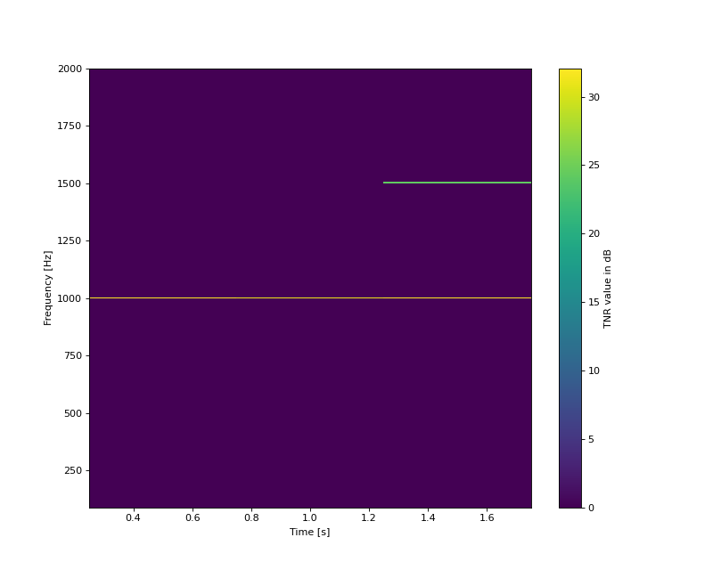

- tnr_ecma_tv(signal, fs, prominence=False, overlap=0)[source]
Returns the tone-to-noise ratio value
This function computes the tone-to-noise ratio according to ECMA-74, annex D.9 for a non-stationary signal.
- Parameters:
signal (numpy.array) – Signal time values in [Pa].
fs (integer) – Sampling frequency.
prominence (Bool) – If True, the algorithm only returns the prominent tones, if False it returns all tones detected. Default to True
overlap (float) – Overlapping coefficient for the time windows of 200ms. Default to 0
- Returns:
t_tnr (float) – Global TNR value.
tnr (array of float) – TNR values for each detected tone.
promi (array of bool) – Prominence criterion for each detected tone.
freqs (array_like) – Frequency axis [Hz].
time (array_like) – Time axis [s].
See also
tnr_ecma_freqTNR computation for a sound spectrum
tnr_ecma_stTNR computation for a stationary signal
pr_ecma_tvProminence ratio for a non-stationary signal
Notes
The algorithm automatically detects the frequency of the tonal components according to Sottek method.
References
[ECMA-418-2]Psychoacoustic metrics for ITT equipment — Part 2 (models based on human perception), 2022.
Examples
The example stimulus is made of white noise + 2 sine waves at 1kHz and 3kHz.
>>> import numpy as np >>> import matplotlib.pyplot as plt >>> from mosqito.sq_metrics import tnr_ecma_tv >>> fs = 48000 >>> d = 2 >>> dB = 60 >>> time = np.arange(0, d, 1/fs) >>> f1 = 1000 >>> f2 = np.zeros((len(time))) >>> f2[len(time)//2:] = 1500 >>> stimulus = 2 * np.sin(2 * np.pi * f1 * time) + np.sin(2 * np.pi * f2 * time)+ np.random.normal(0,0.5, len(time)) >>> rms = np.sqrt(np.mean(np.power(stimulus, 2))) >>> ampl = 0.00002 * np.power(10, dB / 20) / rms >>> stimulus = stimulus * ampl >>> t_tnr, tnr, promi, tones_freqs, time = tnr_ecma_tv(stimulus, fs) >>> plt.figure(figsize=(10,8)) >>> plt.pcolormesh(time, tones_freqs, np.nan_to_num(tnr), vmin=0) >>> plt.colorbar(label = "TNR value in dB") >>> plt.xlabel("Time [s]") >>> plt.ylabel("Frequency [Hz]") >>> plt.ylim(90,2000)
(Source code, png, hires.png, pdf)

{kind=link}
{kind=link}